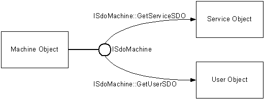
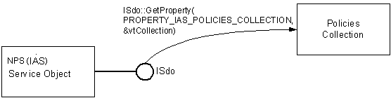

The objects in the SDO object model are arranged in a hierarchy. This means objects in SDO provide access to other objects in SDO.
Objects provide access to other objects in two ways. One way is for the object to expose an interface that provides methods to retrieve other objects. An example of this approach is the Machine object. The Machine object exposes the ISdoMachine interface. The ISdoMachine::GetServiceSDO method retrieves a Service object. The ISdoMachine::GetUserSDO method retrieves a User Object.

For more information, see Obtaining Service and User SDOs.
The second way that objects provide access to other objects is that an object collection is represented as a property of the object that contains it. To retrieve an object collection, call ISdo::GetProperty on the property of an object that represents the collection. For example, to retrieve the Policies collection, call ISdo::GetProperty on the ISdo interface exposed by the NPS object.
[!Note]
Internet Authentication Service (IAS) was renamed Network Policy Server (NPS) starting with Windows Server 2008.
Â

For sample code that retrieves the Policies collection, see Retrieving a Collection.
The NPS Server Data Object has the following properties that represent collections:
Auditors
The only auditor in the Auditors collection is the NT Event Log.
Policies
Each policy object has a property that represents a collection of conditions.
Profiles
Each profile object in the Profiles collections has a property that represents an attributes collection. See SDO Supported Attributes for a list of the attributes supported by SDO.
Protocols
The protocols collection contains the RADIUS protocol object, which contains a clients collection that represents RADIUS clients. See Adding a Client for sample code that shows how to retrieve the client collection.
Proxy Policies
This collection contains Network Access Policies used for connection request processing.
Proxy Profiles
This collection contains profiles used for connection request processing.
RADIUS Server Groups
Each RADIUS server group in the RADIUS Server Groups collection has a property that represents the collection of servers in that server group.
Request Handlers
This collection contains the "Microsoft Realms Evaluator" collection. The "Microsoft NT SAM Authentication" and "Microsoft Accounting" settings are also available in this collection.
Â
Â